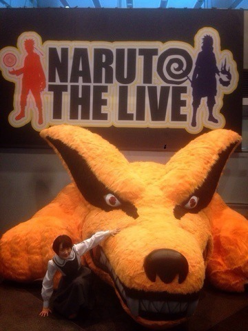
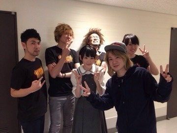
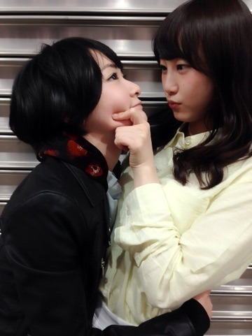

| 2015/04 14 Tue | NARUTO THE LIVE vol.0 |
先週の土曜日に行われましたNARUTO THE LIVE‼️‼️
乃木坂46は、月の大きさという曲でNARUTO疾風伝のopをやらせて頂いた事があったので今回出れた事が嬉しくて嬉しくて。。。

もう生駒のテンションおかしかったですヽ(・∀・)ノヽ(・∀・)ノ
ジャンポリのロケも行ったので、
ジャンポリでもLIVEの様子が放送されると思うので皆さん楽しみにしてて下さいね〜⭐️
クラマとパシャリ

モフモフしてましたっ
本番中も楽しかったけど、
MC中にナルトくんに良かったよと、
いこま姫と言われた事は一生忘れません！！！
過呼吸になるくらいドキドキしました！
嗚呼、思い出したらまたニヤニヤ。(⁼̴̀ૢ꒳⁼̴́ૢ๑)
竹内さんありがとうございますっ！！

ただの1ファンなのに、
こうやって携われて嬉しいです。
NARUTOという作品に出会えて本当に良かったです！！
本当に本当にありがとうございます！！
NARUTOは私たちに沢山の事を教えてくれます！
まだNARUTOを読んだことが無い方がいらっしゃったらぜひぜひ読んでください！！
その作品に触れた時、わかります！！
この感動を！！
そしてAqua Timezの皆さんとパシャリ

生駒の事を知ってて下さって、お話しもしました〜ヽ(・∀・)ノ
楽しかったな〜ヽ(・∀・)ノ
また出れたら出たいなぁ。
すっごく楽しい1日でした

そして次の日の日曜日は東京ビッグサイトで握手会でした〜ヽ(・∀・)ノ
来てくださった皆さまありがとうございました
電車が遅れたりしましたが、皆さんは大丈夫でしたか⁈
お洋服はこれ

パジャマみたいな薄い水色のワンピース

髪飾りもつけたよ〜

生駒だってワンピース着るんだよんっ
玲奈さんの兼任お疲れ様セレモニーがありました。
でも、まだ乃木坂46でいる時間はありますっヽ(・∀・)ノ
また今度いっぱいお礼を言いたいと思います！！

へばなっ☆彡
コメント(664)
2015/04/14 19:00